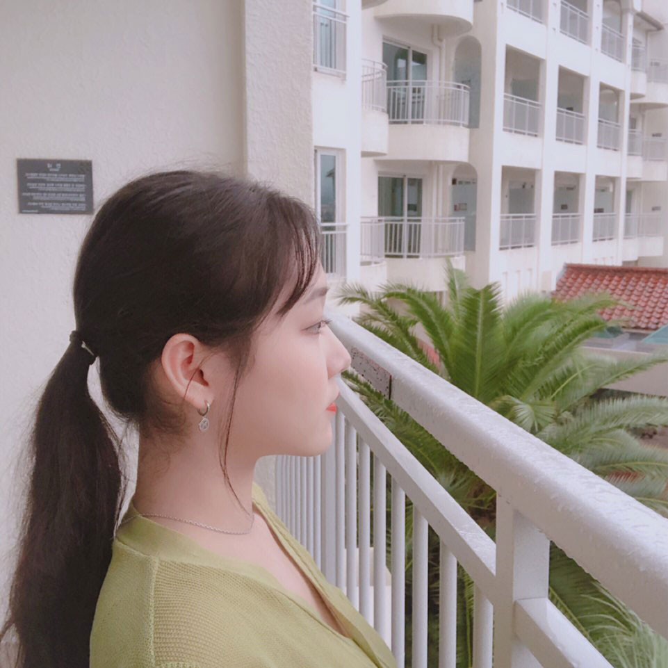
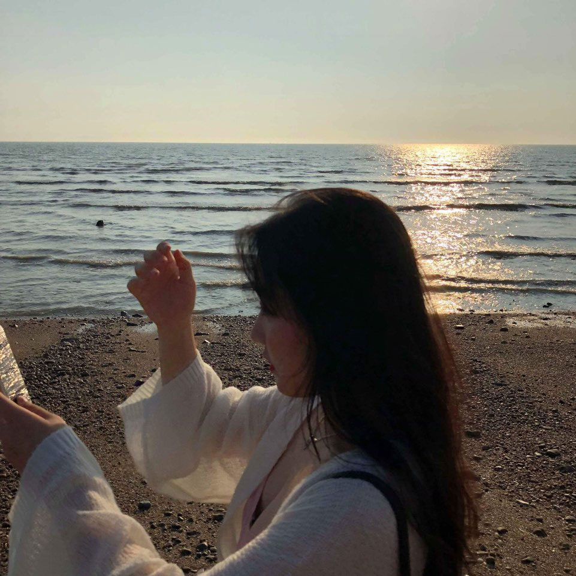
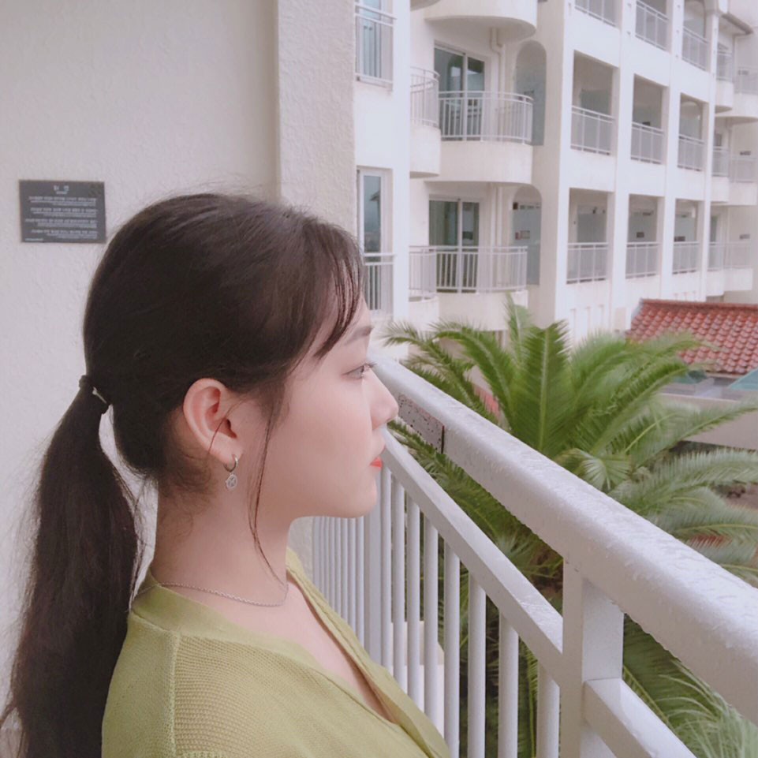
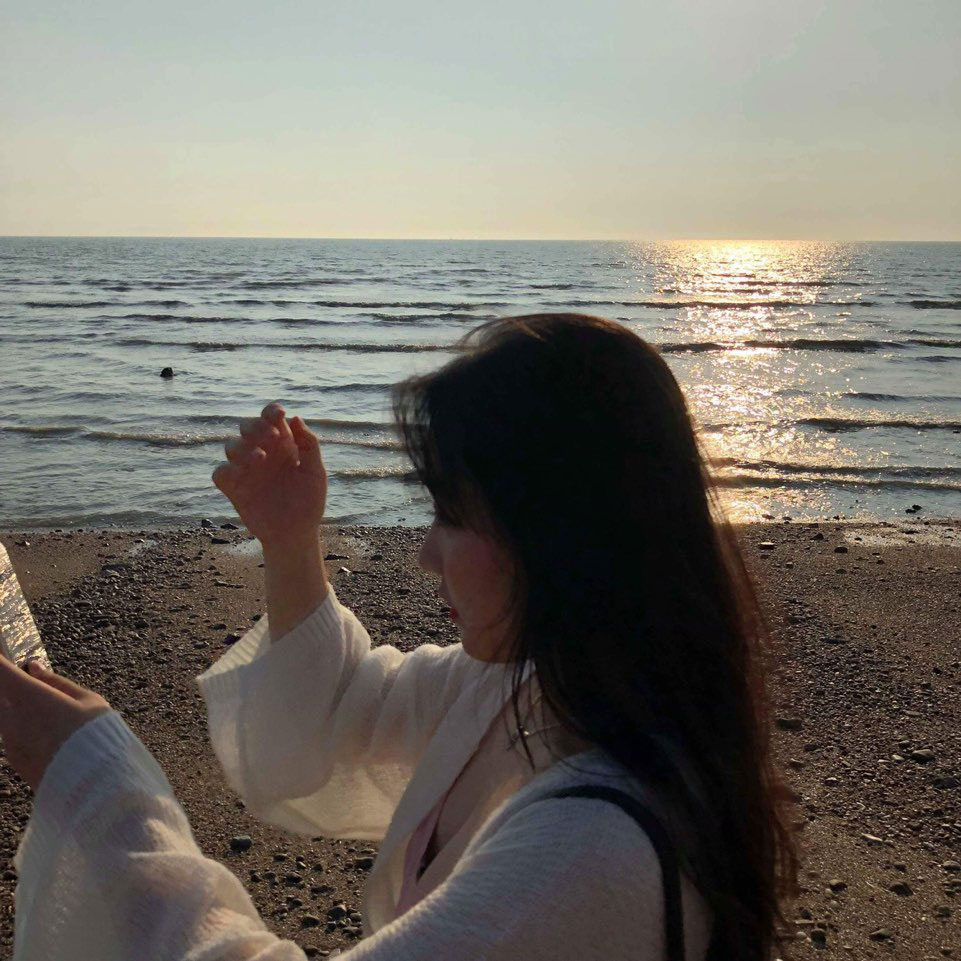

Welcome to
My Honest and Creative
Portfolio.

 웹 퍼블리셔 라는 길의
첫발을 내딛게 되었습니다.
처음 접해본 코딩의세계는
용어조차 낯설어
웹 퍼블리셔 라는 길의
첫발을 내딛게 되었습니다.
처음 접해본 코딩의세계는
용어조차 낯설어
 매 시간 스터디 폴더를 켜놓고
html 작성 방법부터 속성, 태그 등을
익히기에도
매 시간 스터디 폴더를 켜놓고
html 작성 방법부터 속성, 태그 등을
익히기에도 벅차다고 느꼈지만
순탄하지 않았던
이 배움의 과정이
익숙해져 일상이되는 날을 고대하며,
매력 있는 성공한 웹 퍼블리셔를
꿈꾸고 있습니다.
벅차다고 느꼈지만
순탄하지 않았던
이 배움의 과정이
익숙해져 일상이되는 날을 고대하며,
매력 있는 성공한 웹 퍼블리셔를
꿈꾸고 있습니다.